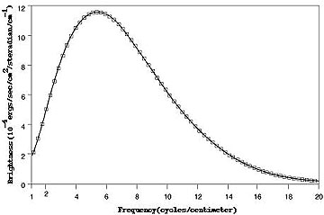

#16139 1 2007-07-09T17:30:15Z faemir First off, sorry if this has been done before

I am interested in how and why people come to whatever they believe, as to get a broader spectrum of views, and to perhaps learn a bit. This isn't a thread about whether something is specifically true or not, I would just like to hear what individual people think, not to comment on other people's beliefs, as I know that has been done lots already
I guess it would help to put along side each persons other attitudes on the forums

Perhaps people could say what they believe then say why? Perhaps even how you came to believe so and whether you were brought up differently? (sorry if that's going a bit off the point)
I guess I will start off
I'm openly a Christian, currently going to a free church. I was brought up a Christian in a very boring church, like many, and was then given to opportunity to do what I wanted. I can't remember how exactly I came to decide for myself that I was Christian, though a lot of it was down to a war inside my head (cue dream theater song

). Personal experience of a miraculous event also further convinced me. I looked at both odds, and atheists and whatnot seemed to take the default of things not existing or happening, while Christians defaulting on there being something behind it, rather than chance or some scientific theory. The faults for such theories as the design argument and cause/effect are, in my mind, far smaller than the less convincing opinion of there just not being anything behind it all. The insane complexity of the universe was probably the tip-over point I guess.
Oh and i'm looking forward to what suki has to say
#340969 2 2007-07-09T17:36:40Z Twistkill The reasoning behind my Christian faith was due to the fact that I was brought up with it. Yes, I do have a choice, and this is the choice that I selected. Why do I choose to be a Christian? You know, I have no idea. Maybe the fact that an all-powerful deity that created this universe has something to do with it, yet I could easily become an atheist or something else that does not depend on something that is not of this world. I cannot explain it.
#340975 3 2007-07-09T18:13:08Z AMomentLikeThis I don't believe in religion. Why? Because I believe that it was all created as a means of controlling people however many thousands of years ago.
I had a choice in my family of what religion to become. After doing compolsary Religious Education in school from the age of 7 to 14 I decided that it was a load of bollocks.
#340984 4 2007-07-09T18:54:54Z ZZ9 Be logical, captain.
I just find it easier to believe it's nothing special then believe in some self-contradicting mumbo-jumbo.
#340990 5 2007-07-09T19:07:13Z smort First of all, if you actually took the time to look at in depth, like Amlt, then you could say it is self contradicting and mumbo jumbo.
Most of the contradicting is because of human error or misspellings in the Bible.
Mumbo Jumbo? It's the most accurate historically correct records we have.
I'm not saying you SHOULD believe in it, only that you haven't seen both sides.
I believe in what I believe because I was brought up with it. I've seen both sides of the argument equally. I've had my times where I had my doubts, but simply could not prove to myself that God does not exist.
#341014 6 2007-07-09T20:06:57Z ZZ9 OK, I retract the thing about the Mumble-Jumbo, however, a lot of religion IS, IMNSHO, over-confusing lies.
#341019 7 2007-07-09T20:14:43Z faemir How you can prove that is unknown to me
#341020 8 2007-07-09T20:15:21Z Ethrel I was born and raised as a Christian. More specifically, in the Catholic sect of Christianity. However, a number of years ago, I went through a rough time and lost faith. For a while I was happy with that, but a couple years later I began my search for renewed faith. I found wicca, which I found to fit my beliefs closer than anything Christian I had found.
As for why, I don't know. Somehow, my beliefs make sense to me in ways I cannot put into words.
#341077 9 2007-07-09T22:40:07Z Rincewind SW I'm an agnostic atheist. I believe that the universe is linear, as time is linear, and although our consciousness gives us the impression of free will, we can't do anything to change what will happen to the universe. But I'm very agnostic about all this existentialism, because we obviously can't know anything for sure.
I believe this simply because I had an existential crisis earlier this year, and realised that I really ought to think about stuff like this more. I went to a Christian junior school, but otherwise had no real contact with religion, and never really felt compelled to worship a questionable deity; until fairly recently I never properly questioned my existence. Without those outside influences that most people seem to have experienced, I'm quite happy with the way things ended up.
#341141 10 2007-07-10T01:32:38Z McP3000 Im an Agnostic Christian. I believe there is a God, but at the same time it is impossible to prove that he is here in modern times until the second coming.
I find it the most logical, reasonable, and optimistic few of life.
#341158 11 2007-07-10T02:29:31Z blue_tetris Im an Agnostic Christian. I believe there is a God, but at the same time it is impossible to prove that he is here in modern times until the second coming.
I find it the most logical, reasonable, and optimistic few of life.
You're not agnostic anything.
And you certainly wouldn't say those blasphemous words to anyone you know in real life.
#341165 12 2007-07-10T02:35:10Z scythe33 I'm an agnostic atheist, or however it might be described; Wikipedia calls it a Strong agnostic, partially because I prefer not to address the question, and partly because there's always the possibility of a supernatural entity that "does nothing" to interact with our universe. #341194 13 2007-07-10T03:47:03Z Kablizzy I believe what I believe because it is right for me. It's what works for me. But on a deeper level than that, it's what makes the most sense to me.
#341221 14 2007-07-10T04:46:32Z Tsukatu I'm a registered member of The Brights community, which is composed of (or should be composed of) people who don't believe in anything outside of this natural universe, which generally rules out God, ghosts, psychics, etc.
First off, I think it's absolutely ridiculous that people should think what they were raised to think. It is my firm belief that people should find out about things for themselves, and to not form opinions about things if they don't know enough about them.
Don't hold a particular religious or political stance just because your parents are. That's just dumb.
I believe whatever it is that I find most rational at any point. In terms of religion, this means that I cycle between agnostic atheism and antitheism (gnostic atheism) a few times a year. I know that none of the Abrahamic faiths could be true because they are ridiculously inconsistent, and I can't see how someone could fail to see that after critical examination.
Because I know far less about social and political issues, I'm all over the board, and every new piece of information that I get will probably have some impact on my stance on any given issue. I don't believe in anything unless I become convinced that it is probably correct (I've said that I don't know enough about a subject to have an opinion more times than you'd think), and I will argue for my point of view only so long as I continue to think I'm correct after seeing the opponent's argument, but there have been plenty of times in which I've surprised the guy arguing for the other side by declaring that I was wrong and apologizing. I can easily see why someone could hang on to a losing argument because they don't want to be incorrect, but I also think that's ridiculous; I know that if I have the correct position that I won't be proven wrong, and that I shouldn't argue for something that I no longer believe is correct. I usually stop arguing when I lose the conviction for my own position, long before I actually start considering that the other guy is right.
(You don't see this when I argue about religion because I've put more thought into religion than anything else in my life. My atheism is very strongly grounded, and it would take a long series of feats that I think are impossible to break that position.)
In summary, I believe things because I am convinced that they are correct, and otherwise don't have a solid opinion one way or the other. I am more than happy to change my views about a subject if I see compelling evidence for it, because I just want to know what is correct.
As I find out more and more about things, I'm less likely to change my position because my beliefs are based on the full domain of knowledge I've gained about the subject.
#341232 15 2007-07-10T04:59:27Z McP3000 Im an Agnostic Christian. I believe there is a God, but at the same time it is impossible to prove that he is here in modern times until the second coming.
I find it the most logical, reasonable, and optimistic few of life.
You're not agnostic anything.
And you certainly wouldn't say those blasphemous words to anyone you know in real life.
Two things:
1. I don't see how I'm not agnostic anything. As far as I'm concerned there are two types of agnostics, agnostic atheist and agnostic theist. Mine would fit in the latter as far as I'm concerned.
2. I don't see how you have the right or even basis to accuse me and my friends/community as a bunch of nutjobs who burns people for saying something even remotely close to that. My community is just as "understanding" as yours, except the fact that we don't stereotype Northerners and Atheists the same way they stereotype us. (That's a lie, we think all northerners like the Yankees, but that's not the point)
Also, what you said is incredibly false.
#341274 16 2007-07-10T07:59:42Z Atilla I don't see how I'm not agnostic anything. As far as I'm concerned there are two types of agnostics, agnostic atheist and agnostic theist. Mine would fit in the latter as far as I'm concerned.
In the past you have been quite... enthusiastic... in your support of Christianity and Christians, and your criticism of atheists. B_T therefore believes that you are not agnostic; that you are quite certain you are right.
I don't see how you have the right or even basis to accuse me and my friends/community as a bunch of nutjobs who burns people for saying something even remotely close to that. My community is just as "understanding" as yours, except the fact that we don't stereotype Northerners and Atheists the same way they stereotype us.
Ironic that you just applied an appalling generality to all atheists whilst saying that you don't stereotype them. In any event, don't worry about b_t. This is not the place for a flame war.
---
Anyway...
My worldview is closest tp
empirical agnostic atheism, also known as "negative agnosticism" and "weak agnosticism". It has not been demonstrated to my satisfaction that gods and suchlike exist or do not exist; therefore, the most rational decision is to withhold judgment. Unlike many people, I have never felt a personal need for religious belief or a connection to any deity, despite years of religious education. Thus, I see no need to believe in or worship a god, and I am therefore an agnostic atheist rather than an agnostic theist. I also have some leanings towards apathetic agnosticism, which is the premise that whether gods exist or not is a largely academic question and not relevant to everyday life. As I said, I have never felt that I have any connection to or that my life is influenced by any gods. Furthermore, I know of no religion whose faithful members all become incredibly lucky or any such. Indeed, atheists tend to have higher levels of education, social status, and wealth than the religious; the gods don't seem to be aiding their followers in any obvious manner.
#341316 17 2007-07-10T10:59:56Z Kablizzy ^ That reminds me.
Linkage.
#341323 18 2007-07-10T11:12:05Z brocerius I dont. I disagree with what i believe on a regular basis.
#341439 19 2007-07-10T18:35:35Z Tsukatu I dont. I disagree with what i believe on a regular basis.
This would make you schizophrenic.
Consult a therapist.
#343582 20 2007-07-16T04:27:35Z Jean-Luc I'm an... "abnormal mormon"
I was "born in the covenant." that's the term used in official records to describe those that are born into families that are members of The Church of Jesus Christ of Latter-Day Saints (better known as "The Mormons")
I don't, however, oft follow what could be called "mainstream mormonism." Although I believe in the doctrine of the church, I think that the church members tend to misinterpret (more like over-interpret) doctrine, stretching it to reflect what they are comfortable with. Due to this, the mainstream LDS churches political views don't tend to reflect real doctrine. I believe that the LDS church's political views are far from doctrine or the teachings of Jesus. In the words of Mahatma Mohandas Gandhi, "I like your Christ, I do not like your Christians. Your Christians are so unlike your Christ."
So although I'm mormon, I'm strongly liberal. I support gay marriage and believe in evolution. Really, I find residents of Utah just plain creepy; I don't like them at all.
Why do I believe what I do?
Faith is hard to explain... in the words of Elder Dallin H. Oaks, a member of the Quorum of the Twelve Apostles of the LDS Church, "Faith settles like the dust on a bureau." For those "Born in the covenant" there is often not a single deciding moment - you just realize one day the bureau is dusty. LDS doctrine teaches us that faith comes from The Holy Spirit, who confirms to us the truth.
As a note, I do not believe that science and religion conflict. Religion is the why, and Science is the how.
#343584 21 2007-07-16T04:35:54Z Skyline I'm a registered member of The Brights community
Heh. Heheheh. Although I consider myself to be an athiest, I think it's pretty ridiculous, the whole "Brights" thing. But anyways, I went to religious education since I was in kindergarten, but for some reason, I just realized that I didn't believe in anything the teachers were saying. It kind of just happened out of nowhere. So, I did some heavy thinking and decided that faith isn't for me, because, truthfully, I just don't see any proof in any of that stuff.
#343612 22 2007-07-16T06:00:40Z astro I'm agnostic because I'm certain it's impossible to know if god/gods exist (since a omnipotent god could make it impossible for us to know), and I'm an atheist in the sense of 'not being a theist' because it requires the smallest leap of faith compared to being a theist. I'm quite convinced that all organised religion is nonsense because of the huge number of conflicting religions all claiming to be the one true religion (at most, only one could be the true religion, and since there is no way of knowing which for all practical purposes of choosing a religion they're all wrong).
Oh, and I consider it unlikely that god exists because: the universe either has always existed or has not always existed and was at some point created. Those are the only two possibilities, and neither makes any sense. Saying 'god created it' doesn't help anything. Either god has always existed, or god was at some point created. Once again, neither makes any sense, so using god as an explanation simply serves to complicate matters. I find it easier to believe that an assortment of particles are responsible for the universe than that some omnipotent being is.
#343615 23 2007-07-16T06:12:45Z capt_weasle I believe what I believe because it is right for me. It's what works for me. But on a deeper level than that, it's what makes the most sense to me.
That's about the closest thing to an explanation I can give without sounding confusing. That and the fact I find it hard to believe that all of this was was just some big accident.
#343668 24 2007-07-16T09:18:04Z blue_tetris As I find out more and more about things, I'm less likely to change my position because my beliefs are based on the full domain of knowledge I've gained about the subject.
I propose a toast to Suki, whose life experiences continue only to reaffirm his convictions!
*pours Suki a shot*
Cheers!
#343895 25 2007-07-16T23:35:03Z 3v!1 Because I'm mad and deluded.
Because I do, to put it simply.
#343975 26 2007-07-17T03:54:49Z DemonzLunchBreak I believe what I believe because it's the only belief that makes complete and coherent sense to me.
Also, I don't think that a belief is a choice. That seems rather silly to me. Someone must be convinced by some sort of evidence or argument to believe what they believe. The only way that someone's belief can change is if a new argument or new evidence is presented to that person.
#344009 27 2007-07-17T05:10:10Z Tsukatu I propose a toast to Suki, whose life experiences continue only to reaffirm his convictions!
*pours Suki a shot*
Cheers!
No, thanks. I've decided not to drink any more alcohol while I'm experimenting with heroin.
#344014 28 2007-07-17T05:21:52Z The_Muffin_Man I believe in living life as it is, do what you can to help the world, and enjoying what you can in your life. If we find proof that there is a god, the world was formed by an explosion or whatever, that be cool, but I truly don't care. I believe in making discoveries and evolving.
#344538 29 2007-07-18T18:07:54Z southpaw Earlier someone said that religion was created to control the masses. This is not true. In Mesopotamia religion was created to explain things such as water and the sun. To say religion was created for the purpose of controlling people is fallacious.
As for my personal beliefs, I have not decided yet. I don't like church, and I don't like the fact that some people believe you must go to church every Sunday or Saturday. Christians don't practice what they preach. Jews seem very materialistic and egotistical. Muslims don't practice what they preach in the Quran, which has many quotes from Jesus. Just thought I would point that out. So all of this "My religion and holy text are the only correct ones!" just goes to show that nobody has actually read up on other relgious texts or studied other religions. I guess I don't want to follow religion because I don't like being around people who claim there is only one way to live your life and it is their way. I don't like people who quote Jesus or Muhammed and then go out and do whatever they want. I HATE forgiveness. It was the worst idea to have ever been created. Jesus did not die for your sins. The idea that he did is what allows Christianity to get away with terrible things. Even those that are on death row can still make it to heaven if they confess their sins before they are given the serum or the electric chair.
okay, I'm done. I hate religion. There are gods but I do not have the power to comprehend them so I must wait until I die to discover the meaning.
As for death, there is an afterlife, but not as we would think. I figured it out just now. The afterlife is knowing that you are one with everything, even planets all the way across the universe. Once you have reached this understanding you are free. Reincarnation is another story, but I think it does exist. So I hate religion but I do believe bits and pieces from each and I have an understanding of each.
"Do not make any god before the one true god."
- Jesus (he said something like this)
And he meant that you should not make any god before the one person you know to be true, and that is yourself. Don't make money your god. Don't make your wife or husband your god. Make yourself your own god, and govern in this way:
"Treat others how you want to be treated."
- Jesus (again, something like this)
#344582 30 2007-07-18T19:59:15Z Tsukatu *cries*
#344591 31 2007-07-18T20:10:04Z smort Earlier someone said that religion was created to control the masses. This is not true. In Mesopotamia religion was created to explain things such as water and the sun. To say religion was created for the purpose of controlling people is fallacious.
As for my personal beliefs, I have not decided yet. I don't like church, and I don't like the fact that some people believe you must go to church every Sunday or Saturday. Christians don't practice what they preach. Jews seem very materialistic and egotistical. Muslims don't practice what they preach in the Quran, which has many quotes from Jesus. Just thought I would point that out. So all of this "My religion and holy text are the only correct ones!" just goes to show that nobody has actually read up on other relgious texts or studied other religions. I guess I don't want to follow religion because I don't like being around people who claim there is only one way to live your life and it is their way. I don't like people who quote Jesus or Muhammed and then go out and do whatever they want. I HATE forgiveness. It was the worst idea to have ever been created. Jesus did not die for your sins. The idea that he did is what allows Christianity to get away with terrible things. Even those that are on death row can still make it to heaven if they confess their sins before they are given the serum or the electric chair.
okay, I'm done. I hate religion. There are gods but I do not have the power to comprehend them so I must wait until I die to discover the meaning.
As for death, there is an afterlife, but not as we would think. I figured it out just now. The afterlife is knowing that you are one with everything, even planets all the way across the universe. Once you have reached this understanding you are free. Reincarnation is another story, but I think it does exist. So I hate religion but I do believe bits and pieces from each and I have an understanding of each.
"Do not make any god before the one true god."
- Jesus (he said something like this)
And he meant that you should not make any god before the one person you know to be true, and that is yourself. Don't make money your god. Don't make your wife or husband your god. Make yourself your own god, and govern in this way:
"Treat others how you want to be treated."
- Jesus (again, something like this)
You said that all matter-of-fact-ly. I would be fine if you worded that a little better, but you did not. Do you really think that something you just made up to fit your needs is correct?
Forgiveness is only valid if sincere. It's not a get out of jail free card.
That one point you said that "This means you should make yourself god because ur the onely one you know is reel!"
Or something like that.
You think that's true? Your right- Jesus did say that. And it says not to make any gods before the one true God. Ummm... so, you think that all throughout the bible, it's referring to God when it says the one true God, or God, or God of the Jews... but not this time?
Oh, okay.
You tell us to read up on our own religions? Well, I do. It's not like no one does. But there alot of christians who don't, you're right.
But you, my friend, did not.
#344595 32 2007-07-18T20:18:22Z 3v!1 Earlier someone said that religion was created to control the masses. This is not true. In Mesopotamia religion was created to explain things such as water and the sun. To say religion was created for the purpose of controlling people is fallacious.
I think both ideas are correct. Religion may have originally been created as an explanation of events; but it quickly transformed into a means of money-making and power-mongering.
#344598 33 2007-07-18T20:27:48Z DemonzLunchBreak Earlier someone said that religion was created to control the masses. This is not true. In Mesopotamia religion was created to explain things such as water and the sun. To say religion was created for the purpose of controlling people is fallacious.
I think both ideas are correct. Religion may have originally been created as an explanation of events; but it quickly transformed into a means of money-making and power-mongering.
I think it's reductionistic of people to treat religion as *only* a way of controlling people, or *only* a way of explaining natural phenomena, or *only* something that people genuinely thought was a path to spiritual truth, because it seems to be more complex than any one of those things.
#344618 34 2007-07-18T20:50:46Z Guest "Do not make any god before the one true god."
- Jesus (he said something like this)
And he meant that you should not make any god before the one person you know to be true, and that is yourself. Don't make money your god. Don't make your wife or husband your god. Make yourself your own god, and govern in this way:
Uh.... Not exactly. What you quoted is the 1st commandment. And it means that God is the one true God, and there is no other. It has nothing to do with treating yourself as a god. It has nothing to do with worshiping yourself because you know you are the only true part of your life.
...
As for my beliefs... I believe what I believe because it makes complete sense to me, and my beliefs have never lead me astray from happiness.
#344682 35 2007-07-18T22:11:43Z southpaw okay obby. I accept that. I thought Jesus said that tho... hmm. Well if god said it then my statement was dumb. Sorry.
I know that religion does help some people. My grandma used to be drunk and a psycho, but she found AA and in turn became a Christian and it has helped her be a better person. I am thankful that something came into her life to help her realize her problems with drinking. If it had been Islam I would have congratulated that too. Like I said, I accept all faiths as being those that help people, I just don't accept people telling me how to live my life (like my mom, sheesh...). And the "you are your own god" thing was simply saying that to know yourself is to know God, and in this way god is simply one's self.
@smort:
I didn't mean to make you angry. I don't mind you didn't agree with everything I said. Yeah, I did say it matter-of-fact but that is because I was stating my own opinions, and I did say it in a way that seemed... weird. Anyway, the afterlife thing was my own opinion and I worded it funny, like it was the only truth. That idea I posted there will probably change within the next month or so, or maybe not for ten years. As for the Jesus quote... I don't have much to say on it. read the last part of the thing I said to Obby. Forgiveness is valid if sincere, but how many people actually feel sincere about forgiveness? Some might, I know there are people on here who would say they do. But I feel like forgiveness is just so that someone can say they confessed. To me it doesn't seem like a Get-Out-Of-Jail Free card. We aren't playing Monopoly. I view confession as a Get-Into-Heaven Free card. It doesn't work like that, or at least that is my understanding from what I know of the Old Testament.
#344686 36 2007-07-18T22:20:03Z Ad I believe that I believe what I believe because someone is making me believe it.
Srsly.
#344733 37 2007-07-19T00:09:30Z Caero When I see that theism is but a universe of hope desperately balancing on a thread of reality, I just feel so empty, as though the thought of such ignorance sucks every last want to believe it out of my mind. Yet humans will do anything to hide from the truth. Theism is a fabrication made by the mind to answer questions that can't be answered. And so many of us believe these answers so strongly. It makes me angry, in a sense, when I think about it. When I look at arguments about the existence of god, I see fairy tales from the theists and logic from the atheists.
#344772 38 2007-07-19T01:28:03Z Tsukatu I believe that I believe what I believe because someone is making me believe it.
Srsly.
Then be skeptical of everything.
That way you're guaranteed not to be a sucker.
And yeah, no, I'm also serious.
#344882 39 2007-07-19T04:46:51Z southpaw When I see that theism is but a universe of hope desperately balancing on a thread of reality, I just feel so empty, as though the thought of such ignorance sucks every last want to believe it out of my mind. Yet humans will do anything to hide from the truth. Theism is a fabrication made by the mind to answer questions that can't be answered. And so many of us believe these answers so strongly. It makes me angry, in a sense, when I think about it. When I look at arguments about the existence of god, I see fairy tales from the theists and logic from the atheists.
try thinking of this (i do this quite often and it is fun):
Imagine how you got here. You were born.
How were you born? Your parents had sex and you were created. And so on and so forth until the first humans.
How did humans get here? one of two answers: (1) a higher being created us, (2) we evolved. Since option one stops there, let us continue on with option 2.
How did we evolve? From lower beings, preferrably monkeys, although some believe birds. either way we can continue.
How did those beings come to be? cells from a rock somewhere out in space crashing into the Earth and adapting quickly to the atmosphere.
How did that rock come to be? Well now we dig a little deeper. You see if you keep going back until the supposed "Big Bang" then suddenly one asks themselves: How did the big bang occur? The big bang is not something that would happen naturally. If you think about it, there is no sense in anything having mass or being able to think. Atoms should not exist, even though we can view them with microscopes. The big bang was the result of all of the universes particles getting squashed into a tiny space and exploding, yet science tells us that the only thing that can be pressurized that much is gas. I believe two black holes met and forced the big bang to happen but I have no proof. Anyway, where would these particles have come from? A god is the only explanation we have right now. And if you are going to say a previous universe, well you could go back to the first universe and still ask the same question. Gods are the only answer we have for the creation of the universe, while the big bang and other phenomena can be used to describe how humans came to be on Earth.
Like i said, I am not religious but god(s) is/are the only way I can say humans could have ever come to be.
#344920 40 2007-07-19T06:13:11Z Caero Short story. Wow what an idiotic post.
Long story. Actually, no, no long story for you. Why don't you go read my last post again. You have no idea what you are talking about. Your theories aren't fact. What you believe is not the truth just because you believe it.
#344922 41 2007-07-19T06:30:26Z southpaw why'd you have to hate on me? I am done being opinionated, as it is getting me in trouble in this forum.
Truthfully I am not trying to be hateful toward anybodies ideas. I actually enjoy reading up on what other people believe. I just got caught up in discovering what I believe and as I read back on some of it I can see how you would say that it seems like I am telling you how it is, not how I see it. Sorry about that.
#344927 42 2007-07-19T06:40:41Z Atilla The big bang is not something that would happen naturally.
Why not? On what basis do you make this assertion? Also, define "naturally".
Atoms should not exist, even though we can view them with microscopes.
Again, why not?
The big bang was the result of all of the universes particles getting squashed into a tiny space and exploding, yet science tells us that the only thing that can be pressurized that much is gas.
Firstly, the big bang is no such thing. It is not a result of anything, so far as we can determine - beyond the big bag the laws of physics as we know them do not apply. Furthermore, the big bang was not an explosion in the traditional sense but rather a rapid expansion of the universe itself.
Secondly, the implication that "the only thing that can be pressurised that much is gas" is not only true but somehow contradicts the big bang is clearly incorrect. For example, black holes contain matter compressed to a point, and it's not accurate to describe a singularity as a gas. There's also the fact that if you apply enough pressure to a gas it turns into a liquid! I think the term you're looking for is "compressed" rather than "pressurised", but again, this is untrue.
I believe two black holes met and forced the big bang to happen but I have no proof.
Based on our current understanding, two black holes colliding just results in a larger black hole.
Anyway, where would these particles have come from? A god is the only explanation we have right now. And if you are going to say a previous universe, well you could go back to the first universe and still ask the same question.
An argument which has been made many, many times, and which is badly flawed. The problem is that you can say the same thing about gods. If gods created the universe, where did they come from? If you say they've always existed, I can just say the same thing about universes. Not to mention that the concept of "always" makes no sense given that time is part of the universe.
---
As for you, Caero... if you think someone is wrong, explain why. Don't hurl abuse at them.
#345058 43 2007-07-19T15:55:53Z Tsukatu "I don't understand the Big Bang and Theory of Evolution, so I think it's more likely that the cause was something that's actually logically impossible." -321southpaw
...even though the Big Bang
does make far more sense:

#345090 44 2007-07-19T17:42:59Z DemonzLunchBreak why'd you have to hate on me? I am done being opinionated, as it is getting me in trouble in this forum.
There's nothing wrong with being opinionated, so long as your opinion is based on reality and logic. I mean, Caero's at fault here for not saying why he was bothered by your post, but I think it was almost, to a degree, justified.
Truthfully I am not trying to be hateful toward anybodies ideas. I actually enjoy reading up on what other people believe. I just got caught up in discovering what I believe and as I read back on some of it I can see how you would say that it seems like I am telling you how it is, not how I see it. Sorry about that.
That wasn't Caero's problem, as far as I can tell. I would address it, but Atilla's beaten me to it, and, as always, has outdone me.
Meh, I'll deal with the evolution bit, since Atilla dealt mostly with your cosmological argument.
How did we evolve? From lower beings, preferrably monkeys, although some believe birds. either way we can continue.
Why "preferably" monkeys? Also, this shows maybe a little misunderstanding about how evolution works.
Our most closely related species is the chimpanzee. We share something like 96% percent of our DNA with them, and it appears that the only major difference between our genotypes is a fused chromosome (telomeres were found in the middle of human chromosome #2 - where they would have absolutely no purpose).
However, evolution hypothesizes that we share a common ancestor with every form of life, so to say that we share a common ancestor with birds would be a little more reasonable than saying that we descended from birds.
How did those beings come to be? cells from a rock somewhere out in space crashing into the Earth and adapting quickly to the atmosphere.
That's an outdated theory that only further complicates matters, because it begs the question "where did those cells come from"?
Most modern abiogenesis models that I've read about use only materials found here, on Earth.
Here's a good article on the subject.
#345140 45 2007-07-19T19:54:55Z southpaw Secondly, the implication that "the only thing that can be pressurised that much is gas" is not only true but somehow contradicts the big bang is clearly incorrect. For example, black holes contain matter compressed to a point, and it's not accurate to describe a singularity as a gas. There's also the fact that if you apply enough pressure to a gas it turns into a liquid! I think the term you're looking for is "compressed" rather than "pressurised", but again, this is untrue.
Black holes do contain matter compressed to a point. But that does not mean that is where they stay. At seemingly random moments a black hole releaes giant spurts of particles, cosmic dust if you will, which I can only assume to be the billions and billions and billions of particles that are becoming squished together more and more.
Accretion disks and gas jets. Not very good article. Here's another one.
Stanford Article
I am not trying to make an argument just saying that is a behavior that occurs in black holes.
EDIT: to show you that black holes do not pressurize or compress mass but break it down into particles then eject them at velocities near the speed of light.
Most modern abiogenesis models that I've read about use only materials found here, on Earth.
I don't think those materials were from this planet originally. If you take the view that Earth started out as a chunk of iron rock and evolved over the course of 40(?) billion years then one can see how iron doesn't exactly create life. If those materials came from elsewhere, you would be right in saying that they didn't all come at the same time, rather as the world continued to grow did the necessary elements for life appear.
#345153 46 2007-07-19T20:29:40Z DemonzLunchBreak Black holes do contain matter compressed to a point. But that does not mean that is where they stay. At seemingly random moments a black hole releaes giant spurts of particles, cosmic dust if you will, which I can only assume to be the billions and billions and billions of particles that are becoming squished together more and more.
1. No, I'm pretty sure that black holes don't do that.
2. That doesn't seem like a valid assumption at all. That assumption doesn't make any sense, given that there is no known substance that can escape a black hole
Accretion disks and gas jets. Not very good article. Here's another one.
Stanford Article
Those both describe the behavior of things falling toward the black hole, not things "spurting out." Once something crosses the event horizon of a black hole, there's no way it's coming back (excluding a wormhole near or at the singularity, but even that would be impossible for something to travel through because it would be torn to shreds before it ever got there).
I am not trying to make an argument just saying that is a behavior that occurs in black holes.
You're "just saying"? If you're not trying to make an argument, what is it exactly that you're doing here?
EDIT: to show you that black holes do not pressurize or compress mass but break it down into particles then eject them at velocities near the speed of light.
Re-read the articles you linked to, then, because that's a misunderstanding.
I don't think those materials were from this planet originally. If you take the view that Earth started out as a chunk of iron rock and evolved over the course of 40(?) billion years then one can see how iron doesn't exactly create life. If those materials came from elsewhere, you would be right in saying that they didn't all come at the same time, rather as the world continued to grow did the necessary elements for life appear.
I meant that the materials were all here at the time that life developed.
#345168 47 2007-07-19T20:56:24Z southpaw woops. my bad I thought they were talking about particles not energy. Ignore everything I said up there.
#345265 48 2007-07-20T01:31:03Z Tsukatu woops. my bad I thought they were talking about particles not energy. Ignore everything I said up there.
Please read the articles you throw at us, especially if you expect us to read them.
#345345 49 2007-07-20T06:05:01Z southpaw sorry suki, I just misread the article. I will try mah best not to do that again.
#346292 50 2007-07-22T21:22:20Z iangb Same as Atilla, I'm a weak (agnostic) atheist.
Linkage.
Linkage the second.
Like that.